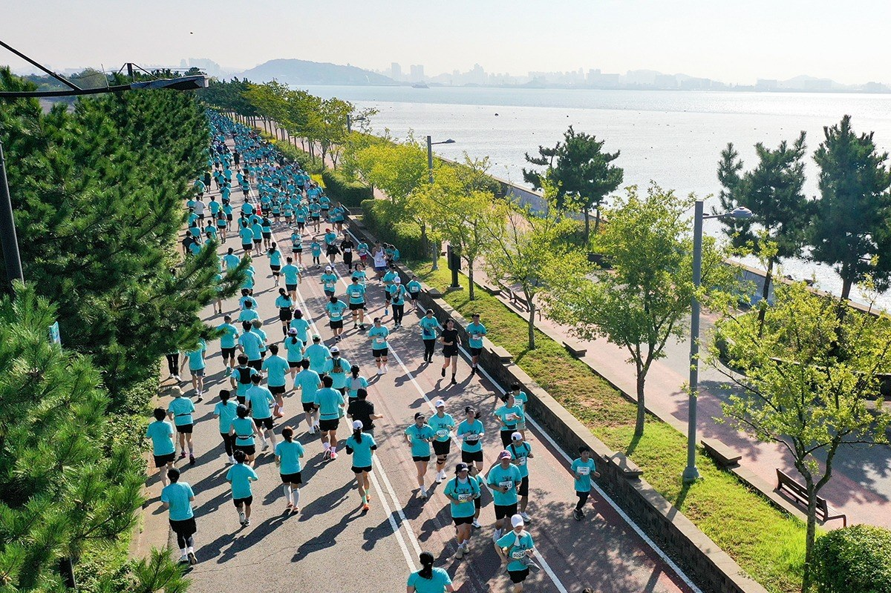
뉴시스템 · 최신 이야기끝까지 달릴 준비
끝까지 달릴 준비
도중에 멈출 대비
내 기록으로 마지막 1㎞를 살펴보고,
중단 뒤 의료지원까지 확인합니다.

내 기록으로 마지막 1㎞를 살펴보고,
중단 뒤 의료지원까지 확인합니다.
코너에 들어가지 않아도, 바로 읽을 수 있습니다.
러닝 안전 · 응급대응 · 인터랙티브
편집#STORY 025퇴사 후 생활비 · 통장 잔고 · 인터랙티브
편집#STORY 024AI 직원 감시 · 근무 기록 · 인터랙티브
편집#STORY 023신변보호 스마트워치 · 지급 이후의 점검
뉴시스템STORY 022축구 · A매치 · 인터랙티브
특집STORY 021누리호 5차 · 위성 15기 · 비행 인터랙티브
편집#STORY 020DMZ · 지뢰 폭발 · 3D 인터랙티브
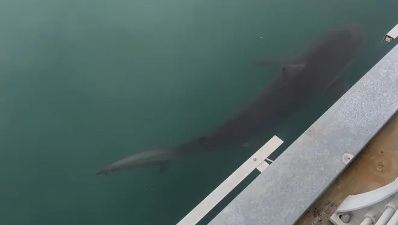
알아볼지도STORY 019부산 북항 · 상어 · 지도 인터랙티브
편집#STORY 0186·25 · 유해발굴 · 인터랙티브
편집#STORY 017라리가 · 팀 전술 · 인터랙티브
뉴시스템STORY 016축구 · 국가대표 · 인터랙티브
편집#STORY 015고령화 · 나이 기준 · 인터랙티브
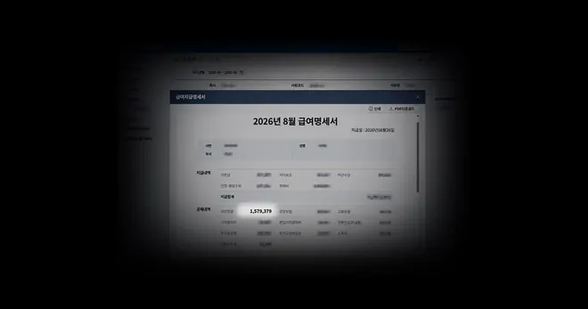
편집#STORY 014국민연금 · 노후 · 인터랙티브
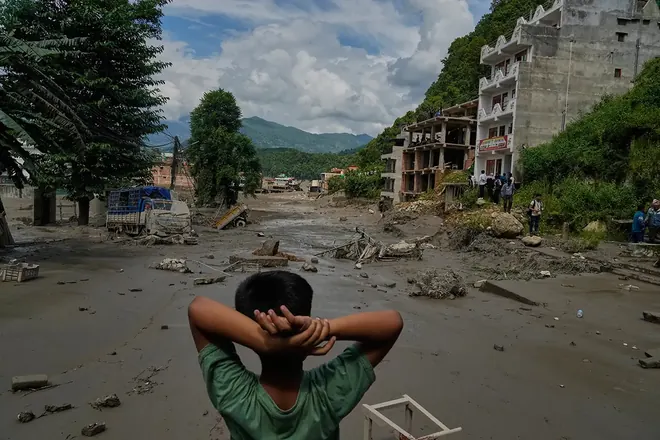
뉴시스템STORY 013네팔 · 빙하 붕괴 · 기후재난
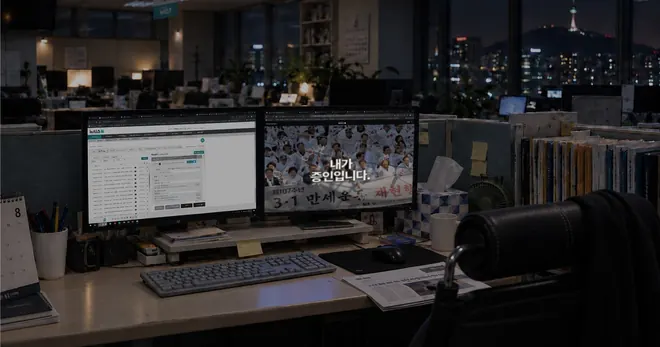
편집#STORY 012AI · 노동시장 · 인터랙티브
편집#STORY 011광복 · 증언 · 기억 · 인터랙티브
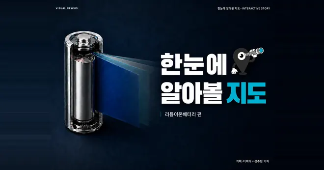
알아볼지도STORY 010리튬이온배터리 · 배터리 구조 · 인터랙티브
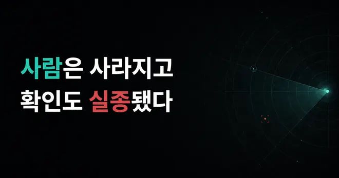
뉴시스템STORY 009성인 실종 · 경찰 초동대응 · 인터랙티브
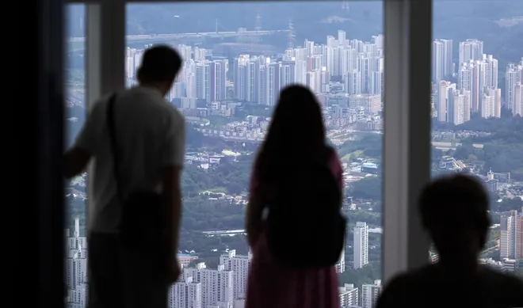
편집#STORY 008주택 · 대출 · 생활비 · 인터랙티브
편집#STORY 007아이 · 생활권 · 인터랙티브
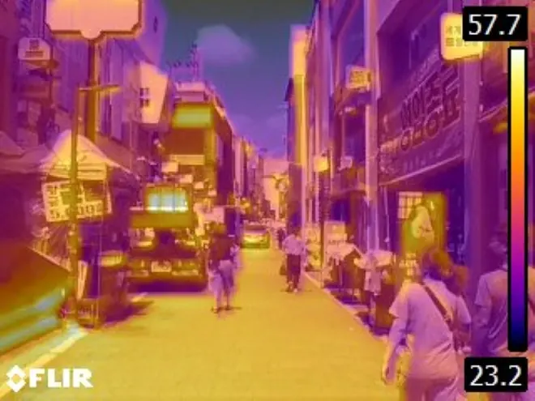
뉴시스템STORY 006폭염 · 폭우 · 기후재난
편집#STORY 005축구 · 전술 · 인터랙티브
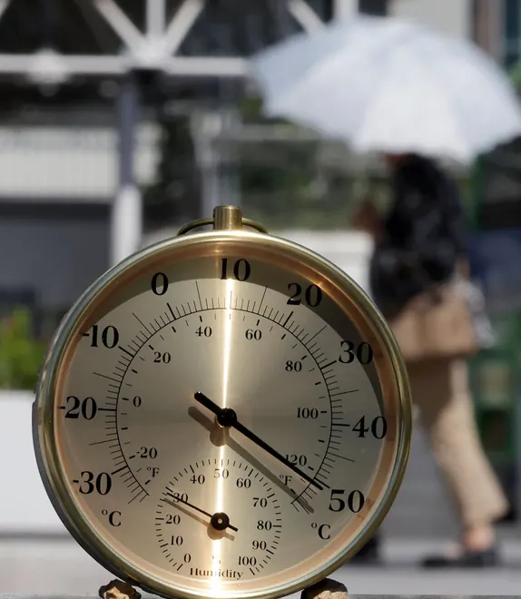
편집#STORY 004폭염 · 열 노출 · 인터랙티브
편집#STORY 003민방위 · 재난대응 · 인터랙티브
편집#STORY 002금리 · 가계경제 · 인터랙티브
편집#STORY 001에너지 · 국제 · 데이터 스토리
뉴스가 있는 충무로 놀이마당
연봉 · 대출 · 예적금 · 할인율
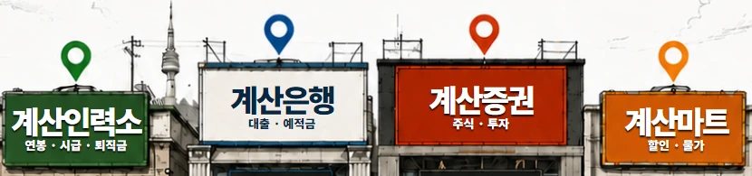
계산인력소 · 계산은행 · 계산증권 · 계산마트자음 하나, 모음 하나.
동물 친구들과 우리말의 작은 차이를 만나보세요.
검색어 대신, 궁금한 곳을 눌러보세요.
전국부터 우리 동네까지 뉴시스 뉴스를 지도에서 만납니다.